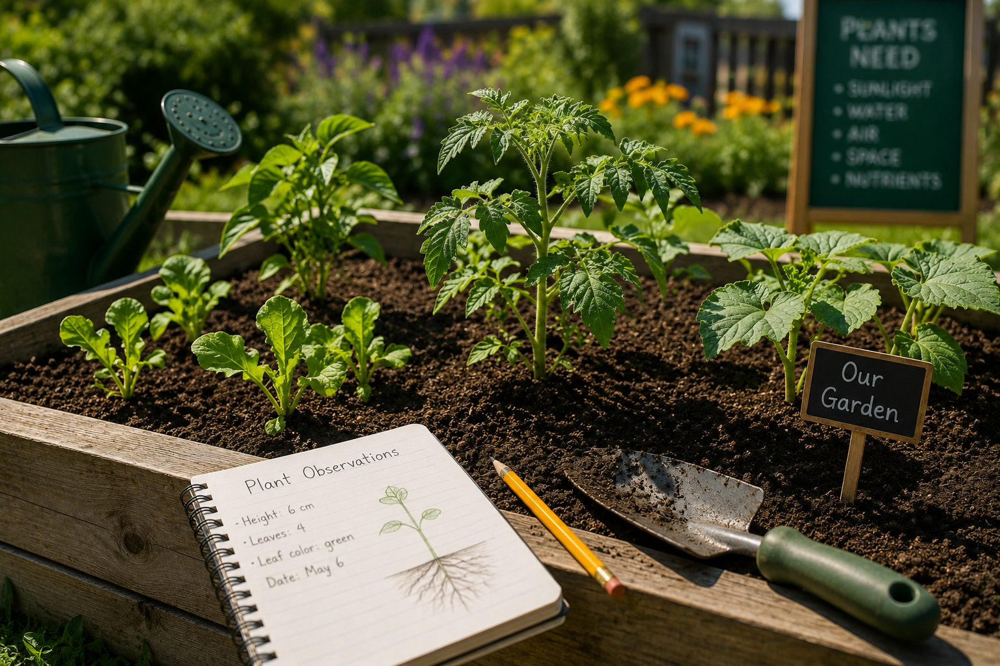
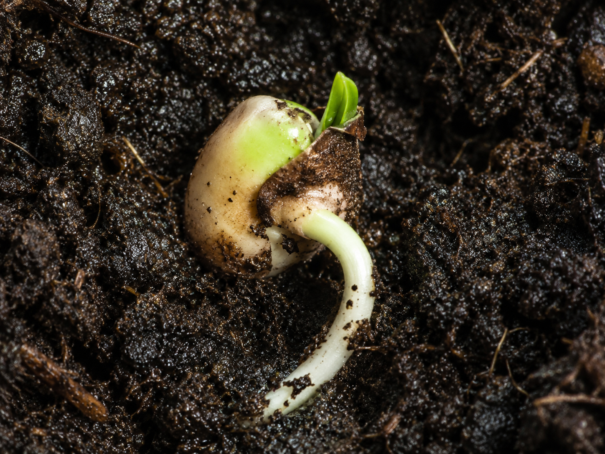
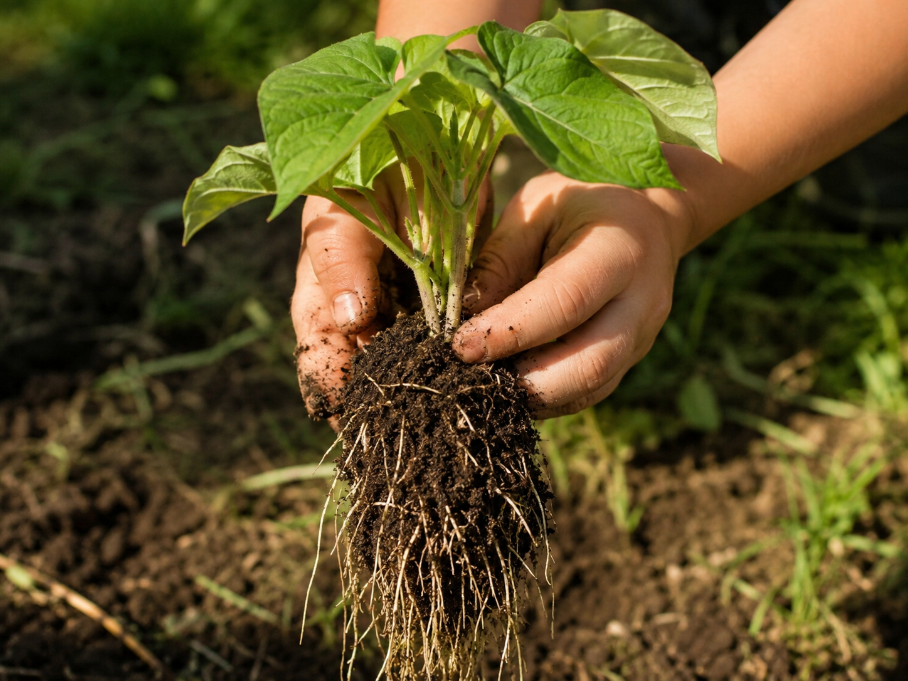
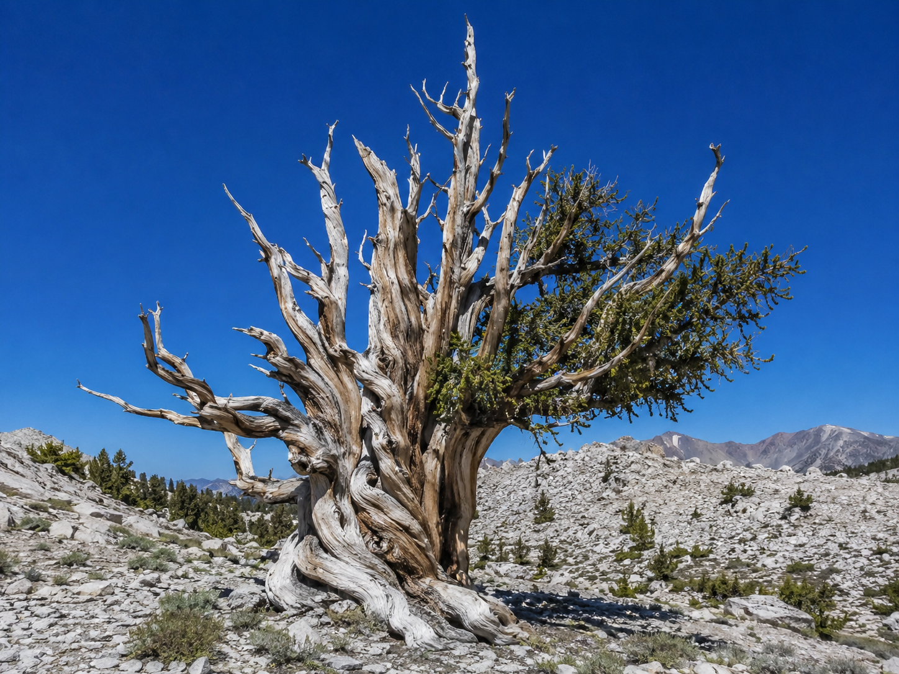

Keep this question in mind as you work through the lesson. By the end, you should be able to answer it with evidence.
Start here. Learn the words you will use today.
Think about the last time you saw a plant — maybe in a garden, a pot on a windowsill, or growing through a sidewalk crack. Plants are everywhere, and they all start from something tiny.
You don't need to know the answer yet. A good question is just as valuable as a right answer — scientists start with questions every time.
Here are six words you'll see throughout this lesson. Tap each card to flip it and read the definition. Try to say each one out loud before moving on.
Copy this sentence carefully into your science notebook:
"Every flowering plant goes through a life cycle — from seed to seedling to mature plant — and each stage depends on sunlight, water, air, and nutrients."
Now learn the main science idea.

Every flowering plant has a life cyclelife cycleThe stages an organism goes through as it grows, reproduces, and eventually dies.. That means it goes through stages — in order — from beginning to end and then back to the beginning again.
For most flowering plants, those stages are: seed → seedling → young plant → mature plant. When the mature plant makes new seeds, the whole cycle can start again.

A seed can sit in a drawer for years without changing. But put it in damp soil with warmth and light — and something starts to happen. Plants need specific things to grow and survive.
Plants need: sunlight to make food, water to carry materials through their bodies, air (especially carbon dioxide), space for their roots and stems, and nutrients from the soil. Take away any one of those things, and the plant struggles.
Look back at the garden photo. The "Plants Need" sign lists all five. Can you find evidence of each one in the photo itself — sunlight reaching the plants, water nearby, soil with nutrients?
Each part of a plant has a specific job — called its structurestructureA part of a plant or animal that does a specific job to help it survive. and function. The parts work together so the whole plant can survive.

Real-World Connection: When you pull a carrot from the ground, you're eating the root. When you eat celery, you're eating the stem. When you eat spinach, you're eating the leaf. Plants use these same structures you eat — to survive.
All flowering plants share the same life cycle: seed, seedling, young plant, mature plant. The mature plant makes new seeds, and the cycle begins again.
Each stage depends on the plant having what it needs — sunlight, water, air, space, and nutrients. Plants also depend on their structures, like roots and leaves, to gather those resources.

Curious? Go Deeper
Why does the life cycle keep repeating? Reproduction is the key. Every living thing — plant or animal — has a life cycle because reproduction is what keeps a species going. Without seeds, there would be no next generation of that plant.
Some plants have surprisingly fast life cycles. A dandelion can go from seed to mature, seed-producing plant in just a few weeks. Others take years. A saguaro cactus doesn't even flower until it's around 35 years old — and it can live to 150 or 200 years. Same basic cycle, very different timing.
Scientists who study plants are called botanists. They track life cycles to understand how plants adapt to different environments, how crops can grow better, and why some plants survive conditions that would kill others. The notebook you saw in today's photo? That's exactly what a real botanist would use.
Now test the idea yourself.
You'll need: A real plant (or a detailed photo of one), science notebook, pencil, ruler, colored pencils.
Scientists don't just read about plants — they look at them closely. In this activity, you'll observe a real plant the way a botanist would.
Look and List: Look at your plant from different angles — top, side, close up. In your notebook, write at least 5 things you notice. Be specific: "the leaves have a wavy edge" is better than "it has leaves."
Measure and Count: Use a ruler to measure the plant's height. Count the number of leaves. Write both numbers in your notebook.
Sketch and Label: Draw the plant in your notebook. Label any structures you can identify: root, stem, leaves, flower (if it has one). Use colored pencils if you have them.
Identify the Stage: Based on what you see, which stage of the life cycle is this plant in — seedling, young plant, or mature plant? Write your answer and explain how you know.
Think about it: Consider these questions as you look back at your observations. You'll use your best thinking in the Write & Explain section.
Tell the whole story of your observation — what you did, what you noticed, and what you figured out. If you were explaining it to a friend who wasn't there, what would you say?
Think through each question on your own. Talk it through in your mind — or discuss with someone nearby.
Check what you understand.
Show what you learned.
🔍 Part A — Label the Plant
Use these words to label a plant drawing in your notebook: root, stem, leaf, flower. Then write what job each part does, in your own words.
🚀 Part B — Short Answer
Answer each question in complete sentences. Use your science vocabulary.
A tomato plant is sitting on a sunny windowsill with plenty of water and soil. It has leaves and a tall stem, but no flowers yet. What stage is it in, and what does it need to complete its life cycle?
What do you think?
💡 Start with: "I think the plant is in the ___ stage because…"
What did you learn that supports your thinking?
💡 Start with: "The lesson showed me that…"
Why does that make sense?
💡 Start with: "This makes sense because…"
📚 Try to use at least one of these words: life cycle, mature plant, structure
🎨 Part C — Draw & Label
Draw a plant life cycle diagram with all four stages arranged in a circle (like a clock). Label each stage and draw an arrow showing the direction the cycle moves. Add one sentence below each stage describing what happens there.
Submit your work on Canvas using one of these options:
Make sure your submission includes all of these: